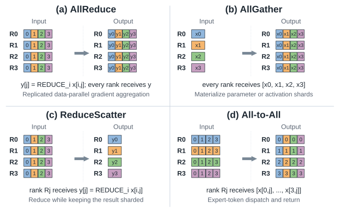

Collective Communication
4.6.1Collective Semantics: Endpoint Data Transformation#
A collective operation specifies an endpoint data transformation: what each participant ends up holding. It says nothing about the route, the schedule or the topology used to get there. Keeping that separation straight is the key to reasoning about distributed performance, so the semantics come first and the algorithms follow separately.

- AllReduce combines corresponding elements from every rank and returns the complete reduced tensor to every rank.
- AllGather collects rank-local shards and returns their ordered concatenation to every rank.
- ReduceScatter reduces corresponding elements, then leaves rank i holding only shard i of the result.
- All-to-All transposes rank-specific chunks: every rank sends a distinct chunk to every peer and receives one chunk from each source [1].
ReduceScatter followed by AllGather can implement AllReduce, but that decomposition is an algorithmic choice, not the definition of AllReduce.
These operations map onto distinct roles in a training stack. Replicated data parallelism uses AllReduce to aggregate gradients. Fully sharded data parallelism and ZeRO-style training use AllGather to materialize parameter shards before computation and ReduceScatter to aggregate gradients while preserving sharding [2]. Tensor and sequence parallelism combine AllReduce, AllGather and ReduceScatter to exchange partial activations or tensor slices [3, 4]. Expert-parallel mixture-of-experts models use All-to-All to dispatch tokens to experts and again to return their outputs [5].
4.6.2Collective Algorithms: Logical Communication Scheduling#
The operation fixes the required data movement; the algorithm chooses the schedule. Which schedule wins depends mostly on message size and group size.
For large reduction payloads over relatively uniform links, a ring is often attractive: it partitions the tensor and pipelines ReduceScatter and AllGather around a logical cycle, approaching bandwidth-optimal per-rank traffic [6]. The cost is a number of startup stages linear in the rank count, so latency dominates for small messages or very large groups.
Tree algorithms cut the dependent stages to logarithmic depth. Double binary trees process complementary halves of the tensor on two trees, distributing forwarding load while retaining high aggregate bandwidth under a suitable mapping, which makes them effective for latency-sensitive and medium-sized reductions at scale [7]. A ring or tree is a logical schedule and need not match the physical wiring literally.
Several families fill the space between. Recursive halving for ReduceScatter followed by recursive doubling for AllGather — a Rabenseifner-style AllReduce — uses logarithmic rounds and works well when the fabric sustains concurrent partner exchanges. Bruck-style schedules similarly cut startup rounds for small AllGather and All-to-All messages, whereas pairwise exchange is usually preferable for bandwidth-dominated All-to-All traffic [8]. Parallel Aggregated Trees extend logarithmic-step AllGather and ReduceScatter to arbitrary rank counts while limiting long-distance transfers [9]. For irregular or asymmetric systems, TACCL synthesizes topology-specific schedules from a hardware model and a communication sketch [10].
4.6.3Collective–Topology Mapping and Communication Offload#
The physical topology decides which logical schedules can use the available links without congestion — this is where the previous two topics meet.
Direct and switched any-to-any fabrics can support multiple concurrent rings or trees, and their direct reachability also suits pairwise All-to-All. On bounded-degree meshes and tori, a runtime can decompose a collective by dimension, or embed multiple rings, so traffic follows local links and avoids oversubscribing a cut [11]. Dragonfly, Boardfly and node–rack–pod fabrics favour hierarchical local–global–local schedules: reduce or gather within a group, exchange only what must cross the scarce inter-group links, then distribute within the destination group. The same principle covers the deeper locality of UB-Mesh and Maia without needing a separate collective semantic per fabric [12, 13].
Where the fabric can reduce in-network, CollNet- or NVLS-style schedules offload the reduction phases of AllReduce or ReduceScatter — though AllGather and All-to-All still have to move their distinct data to the destinations [14].
The practical consequence is that there is no universally best collective algorithm. Runtimes select among rings, trees, recursive exchanges and hierarchical schedules according to the operation, message size, rank count, topology, link asymmetry and current contention [8, 14]. Performance depends on the fabric's raw bandwidth and on how well the runtime maps the operation onto its locality, path diversity and hierarchy.
References
- 1.NVIDIA. Collective Operations. 2026.
- 2.Samyam Rajbhandari et al. ZeRO: Memory Optimizations Toward Training Trillion Parameter Models. Proceedings of the International Conference for High Performance Computing, Networking, Storage and Analysis, 2020.
- 3.Mohammad Shoeybi et al. Megatron-LM: Training Multi-Billion Parameter Language Models Using Model Parallelism. CoRR, 2019.
- 4.Vijay Anand Korthikanti et al. Reducing Activation Recomputation in Large Transformer Models. Proceedings of Machine Learning and Systems, 2023.
- 5.Dmitry Lepikhin et al. GShard: Scaling Giant Models with Conditional Computation and Automatic Sharding. 9th International Conference on Learning Representations (ICLR), 2021.
- 6.Pitch Patarasuk and Xin Yuan. Bandwidth Optimal All-Reduce Algorithms for Clusters of Workstations. Journal of Parallel and Distributed Computing, 2009.
- 7.Sylvain Jeaugey. Massively Scale Your Deep Learning Training with NCCL 2.4. 2019.
- 8.Rajeev Thakur, Rolf Rabenseifner and William Gropp. Optimization of Collective Communication Operations in MPICH. The International Journal of High Performance Computing Applications, 2005.
- 9.Sylvain Jeaugey. PAT: A New Algorithm for All-Gather and Reduce-Scatter Operations at Scale. 2025.
- 10.Aashaka Shah et al. TACCL: Guiding Collective Algorithm Synthesis Using Communication Sketches. 20th USENIX Symposium on Networked Systems Design and Implementation (NSDI 23), 2023.
- 11.Norm Jouppi et al. Tpu v4: An optically reconfigurable supercomputer for machine learning with hardware support for embeddings. Proceedings of the 50th annual international symposium on computer architecture, 2023.
- 12.Heng Liao et al. Ub-mesh: a hierarchically localized nd-fullmesh datacenter network architecture. IEEE Micro, 2025.
- 13.Saurabh Dighe and Artour Levin. Deep Dive into the Maia 200 Architecture. https://techcommunity.microsoft.com/blog/azureinfrastructureblog/deep-dive-into-the-maia-200-architecture/4489312, 2026. Azure Infrastructure Blog. Published Jan. 26, 2026; updated Jan. 30, 2026.
- 14.NVIDIA. NCCL Collective Algorithm Selection. 2026.